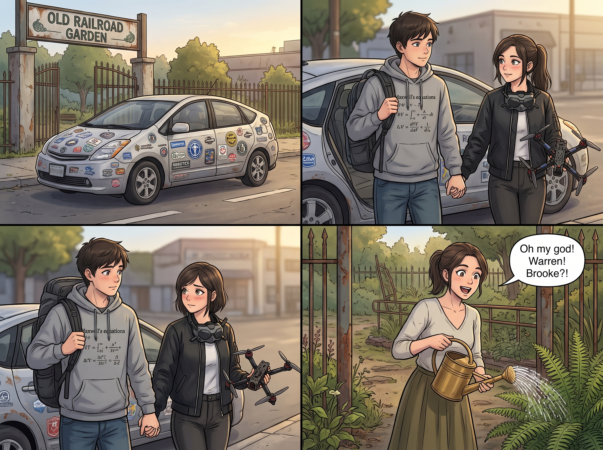

極客官宣

周六午後，一輛貼滿了波特蘭州立大學機器人俱樂部徽章的二手混合動力小掀背車，在舊鐵道花園外緩緩停下。
車門打開，走下來一對風格極其「硬核極客」的情侶——Warren 穿著印有麥克斯韋方程組的灰色連帽衫，身後背著個巨大的 IT 雙肩包；而旁邊的 Brooke 則穿著利落的飛行員夾克，脖子上掛著一副無人機 FPV 飛行眼鏡，手裡甚至還托著一台改裝過碳纖維機臂的四軸航拍無人機。
兩人牽著的手在踏進鐵道花園的瞬間，極其默契（且害羞）地迅速鬆開，但彼此對視時眼底那種青澀與甜蜜，根本藏不住。
一、暴擊重聚
「天哪！Warren！Brooke？！」正在門口給波士頓腎蕨澆水的 Kate 第一個看見了他們，驚喜地放下黃銅噴壺迎了上去。
聽到動靜的 Max 和 Chloe 也從二號車廂探出頭。當 Max 看到 Warren 和 Brooke 身上那種同頻的極客氣場、以及兩人微紅的耳根時，黑框眼鏡後的綠眼睛瞬間亮了起來：「你們……你們居然一起從西雅圖回波特蘭了？！」
「呃，嗨，Max……嗨，Chloe。」Warren 扶了扶眼鏡，有些不好意思地抓了抓後腦勺，隨後鼓起勇氣，非常自然地重新握住了 Brooke 的手，「我們在 PSU 都進了同一個智能自動化與機器人工程專業……上個月在全美水下機器人競賽拿了一等獎之後……嗯，我們正式在一起了。」
「準確地說，是在我幫他重寫了三千行故障避障算法、並且在他把實驗室示波器炸飛之前拉下電閘的那天晚上。」Brooke 嘴角噙著一抹極客特有的驕傲微笑，推了推鼻樑上的墨鏡補刀。
Chloe 拎著一把大號活動扳手大步跨了出來，圍著兩人繞了整整三圈：「看看這是誰！咱們高中的『化學狂人』終於被『無人機女王』給徹底收編了！老娘當年就說過，你們倆在同一個實驗室裡除了搞出連環爆炸，就只能搞出化學反應！」
二、科技碾壓與維度融合
當 Warren 和 Brooke 走進二號車廂時，兩個工科高材生的眼睛瞬間直了。
Brooke 一眼看見了外牆壁畫，興奮得直接啟動了手裡的自研微型無人機：「這壁畫的幾何張力太棒了！Warren，把光流傳感器接上，我們可以用無人機的多光譜鏡頭給這面牆做一個微米級的防銹裂紋掃描！」Miles 看到無人機在空中靈巧地懸停翻滾，眼睛發亮地圍了上來，當場和 Brooke 聊起了航拍透視構圖。
Warren 則被 Max 桌上的老式光學測距儀和德產金屬車床徹底吸住。他從背包裡掏出一台便攜式數字示波器，主動幫 Max 檢測老相機電子快門的微秒級電容延遲：「Max！你的快門線阻抗有點高，我和 Brooke 剛好帶了一盒鍍金低阻抗排線，五分鐘就能幫你改裝成零延遲觸發！」
Victoria 抱著手臂從辦公室走出來，端著骨瓷茶杯打量著這對極客情侶，挑眉冷笑了一聲：「看來西雅圖的頂尖理工科終於把當年的幼稚病給治好了。如果你們的無人機團隊能在工坊秋季展覽時提供一套室內全景動態巡航系統，基金會可以考慮給你們的實驗室批一筆天使輪贊助。」
三、長木桌上的青春回響
傍晚時分，長木桌上擺滿了 Kate 烤的迷迭香羊排、奶油蘑菇意麵與大罐冰鎮氣泡水。
點唱機流淌著悠揚的旋律。Warren 和 Brooke 坐在桌邊，一邊互相往對方的盤子裡夾菜，一邊聊著大學實驗室裡各種啼笑皆非的代碼事故與教授八卦；Chloe 則大肆分享著她用五公斤自製筋膜滾筒把所有人「按在地上摩擦」的英雄事跡，逗得全場大笑。
Max 悄悄退後半步，端起大畫幅相機。
取景框裡，夕陽將整張長木桌鍍上了一層溫暖的碎金——Victoria 在 iPad 上為極客情侶劃定贊助條款，Kate 溫柔地遞上剛出爐的甜點，Miles 正興奮地向 Brooke 請教航拍雲台的編程代碼，Warren 側過頭溫柔地幫 Brooke 擦掉嘴角的一點醬汁，而 Chloe 則在桌底下緊緊牽著 Max 的手，對著鏡頭囂張地挑眉。
「咔嚓。」
快門落下。阿卡迪亞灣的風暴與迷茫早已遠去，而在波特蘭這座充滿火花與笑聲的鋼鐵方舟裡，昔日的老同學們各自找到了屬於自己的軌道與心靈的歸宿，在同一個黃昏下，綻放出最明亮、最安定的光芒。